Clubnieuws
Aan onze moslimleden,
Deze week begint de vastenmaand Ramadan.Alles wat wij zijn en alles wat wij hebben zijn geschenken van God. Tijdens de vastentijd zijn wij ons daar extra van bewust. De vastentijd helpt ons om te zien dat ieder mens door God zelf is gewild. Wij worden opgeroepen door God om met elkaar te delen. En om ons te verzetten tegen alles waardoor mensen worden verlaagd in hun waardigheid. Laten wij elkaar helpen bij het delen van onze geschenken. Zo kunnen wij laten zien dat godsdienst een heilzame uitwerking heeft voor alle mensen. Het is onze hoop, dat wij elkaars vreugde en verdriet blijven delen. Immers, gedeelde pijn wordt gehalveerd en gedeelde vreugde wordt verdubbeld. Wij wensen jullie een gezegende Ramadan en een vreugdevolle viering van ‘Id al-Fitr toe.
Het bestuur
Vlug en Vaardig is weer een bordsponsor rijker.
Arnoud Peeters van Sciandri.Arnoud voetbalde jaren bij VenV en was er zelfs een aantal jaren trainer. Nu steunt hij onze club door middel van een reclamebord. Bijzonder was het tekenen van het het contract want dat gebeurde in Spanje.
Voor verdere informatie verwijs ik u naar de de website.
www.sciandri.com
Heeft u ook interesse in een reclamebord langs ons veld stuur ons dan gerust een berichtje.
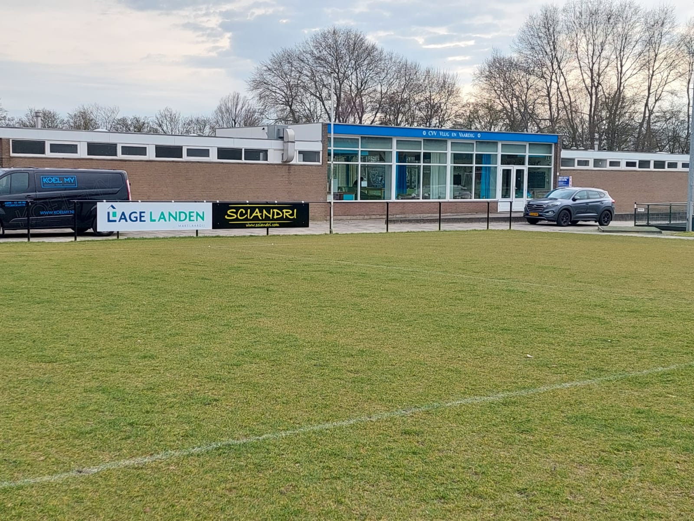
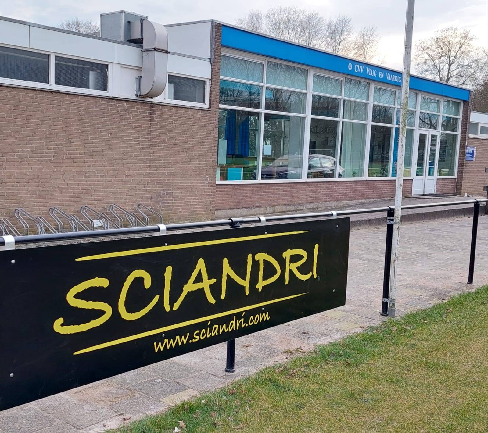
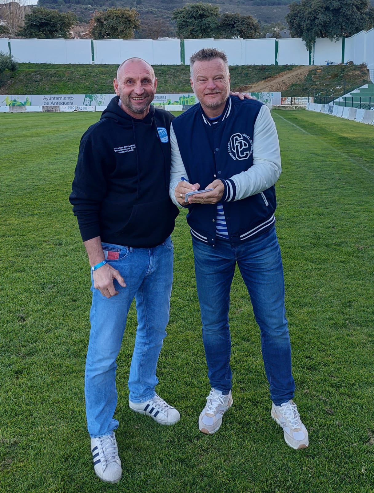
De JO 10 is in 2023 begonnen als nieuw jeugdteam.
15-1-2023
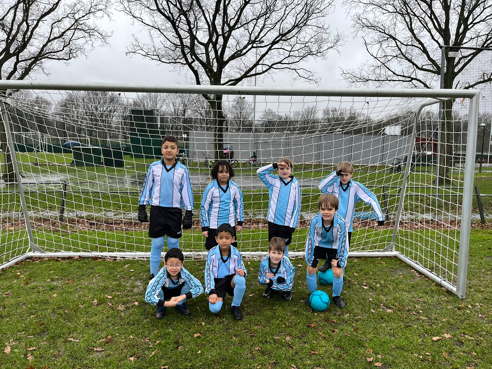
Zaterdagochtend 14 januari de 1ste wedstrijd op het programma tegen SDW. Het was echt hondenweer. Maar dat hield onze strijders niet tegen. Iedereen stond te trappelen om te starten.
Ondanks de uitslag was iedereen tevreden en heeft zich prima vermaakt. Nu weer trainen en op naar de volgende wedstrijd.
TRAININGSKAMP 2023 TORREMOLINOS EEN OOGGETUIGEVERSLAG
15-1-2023
DEEL 1
Het idee om op trainingskamp te gaan met de selectie van VenV begon aan het einde van het vorige seizoen. Na wat overleg en na de gekregen offertes besloten we om naar Torremolinos te gaan. Zogezegd is nog niet zo gedaan. Er moesten een heleboel zaken geregeld worden. De financiën bijvoorbeeld, iedereen moet zijn eigen reis betalen. Voor de één is dat makkelijker dan voor de ander. Maar ondanks dat een ieder zelf moest betalen, gingen er toch 19 spelers en 4 man begeleiding mee.
En dan is het zover. Dinsdag 3 januari 4.30 uur verzamelen op Schiphol. Ondanks het vroege tijdstip is bijna iedereen op tijd. De vlucht verliep prima. Eerst was iedereen nog druk, maar langzaam gingen de oogjes dicht en lagen de meeste toppers te slapen. Nadat iedereen zijn koffer van de lopende band had gepakt, vertrokken we naar de gereedstaande bus. Deze bracht ons naar ons 4 sterren hotel. Wat een prachtig hotel. Zo'n hotel hoort natuurlijk bij zo'n prachtige club en groep waar we mee op stap zijn.
De kamers waren al gereed. In duo's vertrokken de spelers naar hun kamer en maakten zich gereed voor de lunch. Over de lunch hadden we niet te klagen, er was ruim voldoende.
Na de lunch had iedereen 90 minuten voor zichzelf. Een deel van de groep ging zwemmen in het zwembad op het dak, een ander koos ervoor om wat te gaan rusten. En de laatste groep maakte zich op voor een strandwandeling.
Om 15.20 stond bijna iedereen paraat om met de bus te vertrekken naar het trainingscomplex. Na een kleine 20 minuten kwamen we daar aan. Het was een klein stadionnetje met kunstgras en een keiharde ondergrond. Het zag er wel knus uit.
De boys vonden het lekker om weer even actief te zijn. Korte warming-up, pass trap oefening, stukkie conditioneel en tot slot een partijspel. De 90 min vlogen voorbij. Na de training moest er even gedobbeld worden. Nu hoor ik jullie denken ‘dobbelen’? Dit was voor de mannen die te laat verzamelden. Ieder getal was een opdracht, dus een ieder bepaalde een klein beetje zijn eigen straf.
De bus bracht ons terug naar het hotel waar we na aankomst gelijk doorpakten om de straffen te gaan innen. Iedereen die Torremolinos kent, kent ook de trappen. Ga die maar eens 5x op en neer. Ik kan je zeggen je gaat kapot. Daarna door naar het strand waar de verplichte zeedip gedaan werd. En dit alles gebeurde onder toezicht van onze duivel.
Nadat ieder zijn lot had ondergaan, volgde het gereed maken voor het avondeten. En dit was net zoals de lunch uitstekend.
Als slot van de gezamenlijke activiteiten was er de voetbalquiz: 50 vragen in 3 rondes kregen de duo's op zich afgevuurd. Het bleef tot het einde spannend. De winnaars hadden 3 punten meer dan de nummer 2 en waren dus de terechte winnaars.
Door het fanatisme van iedereen vloog de tijd voorbij. Het was ondertussen 23.30 uur. De groep wijze mannen besloot om zich terug te trekken op hun kamer, terwijl de jonge honden zich opmaakten om nog even de bloemetjes buiten te zetten. We zijn benieuwd hoe de oogjes morgenochtend staan bij het ontbijt.
Maar het gezegde zegt: 's nachts een kerel, overdag een kerel.
Morgen hebben we weer een mooie, volle dag met als afsluiting een wedstrijd in Antequera.
Ik zeg welterusten en tot snel.
DEEL 2 De dag begon voor ons toen het buiten al licht was. Het was bewolk,t maar de zon deed al zijn best om ons deze dag weer te vergezellen. Dit weer bevalt ons beter dan het weer in Amsterdam.
De nacht was voor sommige mannen iets korter dan andere nachten. Maar zoals afgesproken was bijna iedereen weer op tijd. Er was vrije inloop vanaf 7.00 uur tot uiterlijk 9.30 uur. De wijze mannen waren natuurlijk, zoals het hoort, weer als eerste in de eetzaal.
Na het ontbijt hadden we om 10.15 uur afgesproken in de lobby. Iedereen moest gereed staan in trainingskleding om aan de strandtraining mee te doen. De wandeling naar het strand ging weer via de beruchte trappetjes. Sommige spelers hebben er nog spierpijn van. Eigen schuld dikke bult, moet je maar op tijd komen.
Op het strand kozen de mannen zelf partijen, 4 ploegen van 5. Het plezier was duidelijk zichtbaar en er werd gestreden om elke korrel zand. Na twee wedstrijdjes was het genoeg en werd er overgegaan op een paar kleine corrigerende tikjes. De laatkomers moesten een klein loopparcours afleggen en het resultaat was dat er na een uur pas weer gezeten kon worden.
Na het voetbalgeweld werd er nog een verfrissende duik genomen en daarna terug naar het hotel, waar de lunch alweer gereed stond. Na de lunch werd er gerust, want er moest om 19.00 uur gespeeld worden in Antequera tegen Antequera. De wijze mannen trokken zich na de lunch ook even terug om de strijdplannen door te nemen voor de wedstrijd en speelden ook nog een spelletje kaart. Wat er precies gespeeld werd, weet ik niet, maar volgens mij was het kraken, klaverjassen en hartenjagen door elkaar. Hoe het verhaal precies zat, weet alleen de keeperstrainer.
De tijd vliegt hier voorbij. Zo was het alweer tijd om naar Antequera te gaan. Afgesproken om 15.50 uur. Was iedereen er? Jullie zeggen nu waarschijnlijk volmondig nee. Maar ik kan jullie vertellen die corrigerende tikjes en trappetjes helpen wel voor de boys. Iedereen was op tijd.
Na een kleine 45 minuten met de bus kwamen we aan bij het stadion. We konden er helaas niet spelen. Het was wel leuk om het stadion te zien en de plannen van deze club te horen. Dit alles werd verteld door John die ik nog ken uit mijn opleidingstijd bij de KNVB. Leuk om hem weer te zien en te spreken. Sommige spelers kochten zelfs nog een tenue van deze club.
Ook is er sinds kort een oud VenV'er actief bij deze club, hij luistert naar de naam Arnoud. Voor de mensen die Arnoud niet kennen, hij is een oud-trainer van de wijze mannen. En ook een echte VenV'er. Ondanks het feit, dat hij daar actief is, heeft hij nog steeds een groen-oranje hart. Dat liet hij ons blijken door ons te vertellen dat hij graag bij ons langs de lijn wil staan met een reclamebord. Jullie kunnen over een aantal weken het nieuwe bord van Sciandri bewonderen.
Tot slot hebben we nog de wedstrijd. Daar kunnen we natuurlijk uren over praten. Ik zal het voor deze keer kort houden. Het begin was zeker voor ons. We scoorden de 0-1, iedereen inclusief Jules de Korte zag het, behalve de Spaanse scheids. Zo bleef de brilstand nog op het scorebord. We creëerden nog 2 grote kansen, maar de bal ging er niet in. We gaven weinig weg, maar ondanks geen grote kansen scoorden zij wel een prachtige goal voor de rust. De tweede helft begon van onze kant met 5 wissels. We speelden de nu compact, maar konden niet echt een vuist meer maken. In minuut 88 en 93 scoorden zij helaas nog 2 maal. Alle 19 spelers hebben nu internationale ervaring en zijn klaar voor een eventuele return. Na de internationale pers te woord te hebben gestaan, vertrokken we richting ons hotel.
Aangekomen bij het hotel nog een klein drankje en hapje buiten de deur gedaan. Nu is het tijd om de bedjes weer op te zoeken. Of dit voor iedereen geldt, is niet duidelijk, maar dat zien we morgen wel bij het ontbijt.
Tot morgen.
DEEL 3 Voor sommige boys was afgelopen nacht een hele zware nacht. Dit viel af te lezen uit het aantal personen, dat aan de ontbijttafel verscheen. Een x aantal sloegen even over en de boys die er wel waren deden na het ontbijt een ochtendwandeling om de spiertjes weer even los te gooien na de zware wedstrijd van gisteren. Om het voor iedereen te verduidelijken, iedereen was vrij om zelf te bepalen wat hij wilde doen. De enige afspraak was dat iedereen weer klaar zou staan om 12.25 uur voor de busreis naar de laatste training.
Aangekomen bij het complex snel de schoentjes aan om daar de laatste training te starten. Twee man waren licht geblesseerd en hadden vrijaf om mee te trainen, maar werden als materiaalman ingezet. De training begon stroef. Maar na een aantal oefeningen verdampte de alcohol uit het lichaam en werden de spiertjes weer wat soepeler. Toen alles weer wat soepeler was, even lekker schieten op de keepers en tot slot een positiespel. Voor de grappen en grollen was er aan het einde van de training even tijd. Er waren weer de befaamde koprollen, die eindigden in de sirtaki. Aan het lachen, gieren brullen was geen gebrek. De laatste training was voorbij voordat we het wisten. Snel terug naar het hotel om de uitgestelde lunch te nuttigen. Deze lunch was gezamenlijk en zo zaten er 23 man vermoeid aan tafel.
Toen alle bordjes leeg waren kreeg iedereen weer tijd om zichzelf te vermaken. Het enige wat er moest gebeuren was het inleveren van de kleding. Dit verliep snel en zo kon iedereen zijn eigen ding doen. Een aantal koos ervoor om te gaan zwemmen en een aantal pakte hun rust om te chillen. Ook werd er een wereldrecord gevestigd met hoeveel man kun in je in deze sauna. Normaal kunnen er 10 in, maar nu zaten er 2 oudere stellen (lees 65+) en 17 VenV'ers. We hebben eindelijk weer een prijs.
Na alle vrije tijd was het alweer tijd voor het avondeten. Na het avondeten maakte iedereen zich op om de laatste avond door te brengen in Malaga. De wat oudere spelers en begeleiding gingen op verkenningstocht en konden zo vertellen wat er leuk was om te doen. De eerste groep ging als eerste weer naar huis. Het was mooi geweest voor vandaag. Het was ondertussen al 2.00 uur. De jonkies trekken nog even door.
Morgen de laatste dag alweer. Iedereen moet dan verplicht om 9.30 uur verschijnen bij het ontbijt. We zijn benieuwd hoe de kopjes er dan bij staan. Maar dat vertellen we jullie later wel.
DEEL 4
Het feesten ging tot in de late uurtjes door in Malaga. Volgens betrouwbare bronnen waren de laatste pas rond 6.30 uur terug in het hotel. En de hit 22 baco’s is regelmatig voorbijgekomen. Ik kan u verzekeren dat een aantal dit al alleen deed.
Maar daar is hij weer, 's nachts een kerel overdag een kerel. Helaas gold dit niet voor iedereen. Bij het ontbijt was de helft aanwezig. De overigen konden geen woord meer schrijven of zeggen.
Omdat dit de laatste dag was, moesten we de kamers verlaten. Het uitchecken was om 11.00 uur. We hadden de afspraak dat iedereen om 10.35 uur beneden zou zijn, zodat we nog wat speling hadden. Dit was ons aardig gelukt: 21 van de 23 op tijd.
Twee neefjes konden zich helaas niets meer herinneren van deze afspraken en waren nog heel ver weg in dromenland. Toen moest de trainer zelf maar even op inspectie. Pasje geleend en op naar boven. Wat zijn ze lief als ze slapen, maar dat was nu even niet de bedoeling. Nadat het dekbed soepel verwijderd was, schrokken ze verbaasd wakker. Even wat duidelijke woorden gefluisterd: kamer opruimen en in 5 minuten beneden, meer is er niet gezegd. Het oudste neefje begreep de bedoeling. Het stoute en kleine neefje begreep het niet helemaal, want bij terugkomst na 5 minuten lag hij weer tussen de zure lappen. Na nog eenmaal alles uitgelegd te hebben, drong het door en was hij daarna heel snel beneden.
Zo hoofdstukje uitchecken voorbij. Nu iedereen vrij tot 17.30 uur voor vertrek naar het vliegveld. Het weer was goed, een graad of 17, dus heerlijk wandelweer. Kleine en wat grote gingen hun eigen weg. Een groep vertrok voor een wandeling langs de zee over de boulevard, balletje mee en lol maken met de andere toeristen. Inspelen en hopen op een kaats. Lukte dit dan kwam er gejuich. Natuurlijk was er ook nog tijd voor een hapje en een drankje, dit gebeurde natuurlijk in het zonnetje. Andere zochten een massage op. En een enkeling ging zelfs naar een wellnescentrum. Iedereen heeft zich volgens mij vermaakt.
Het is alweer half 6 en iedereen was er. Nu wachten op de bus, die ons naar het vliegveld zou brengen. De bus was ook deze keer op tijd. En zo vertrokken we richting het vliegveld. Dit deden we overigens met 2 man minder, want die blijven nog een weekje langer. Op het vliegveld nog wat gekaart, souvenirs gescoord en natuurlijk langs de Burger King.
De vlucht vertrok iets later dan gepland. Maar door de wind mee kwamen we redelijk op tijd aan. Na het wachten op de vuile was, konden we naar de aankomsthal waar horde supporters ons opwachtte. Het was ondertussen al zaterdag. Iedereen ging daarna zijn eigen weg. Na nog wat mensen te hebben afgezet, vertrok de auto richting Sportpark Ookmeer. Daar nog even de vuile was gedropt en de eerste was aangezet. Morgen tijdens het toernooitje en de nieuwjaarsreceptie volgt de rest wel.
Tot slot van deze 4 dagen wil ik iedereen bedanken voor de inzet, sfeer en gezelligheid. Deze dagen zijn zeker voor herhaling vatbaar.
En als allerlaatste:
⚽️IK HEB GENOTEN VAN DEZE TOPPERS⚽️
❤️MANNEN BEDANKT❤️
Voor nu welterusten en tot straks. 13.30 uur aanwezig, want anders de dobbelsteen en ik kan jullie verzekeren, die blijft erin

.jpeg)
.jpeg)
.jpeg)
.jpeg)

.jpeg)
.jpeg)
.jpeg)

.jpeg)


.jpeg)
.jpeg)
.jpeg)
.jpeg)
.jpeg)

.jpeg)
.jpeg)
.jpeg)

.jpeg)
.jpeg)
.jpeg)
.jpeg)
.jpeg)
.jpeg)

.jpeg)
.jpeg)
.jpeg)
.jpeg)
.jpeg)
.jpeg)
.jpeg)
Nieuwjaarsreceptie 2023
10 Januari , 2023
Het was al gezellig druk, toen om 14.00 uur de bal aan het rollen werd gebracht. Vier teams streden om de symbolische nieuwjaarsbokaal. Ook veel jongens van de selectie, die ’s nachts uit het trainingskamp in Spanje was teruggekeerd, waren aanwezig. Naarmate de tijd vorderde, nam het aantal toeschouwers toe. Gelukkig bleef het droog, zodat iedereen tegen 16.00 uur de kantine droog kon opzoeken om elkaar het beste te wensen voor 2023.
Een belangrijke man ontbrak helaas. Bayazit was door zijn rug gegaan en moest thuis blijven. Vanaf deze plaats beterschap en de beste wensen voor 2023.
Even later was het tijd voor de nieuwjaarsspeech van de voorzitter:
Beste V en V’ers,
Hartelijk welkom op onze nieuwjaarsreceptie, na een onderbreking van 2 jaar mag het gelukkig weer.
Het is een goede traditie aan het begin van deze nieuwjaarsbijeenkomst stil te staan bij hen, die de afgelopen periode overleden zijn.
Helaas moesten wij afscheid nemen van:
Arne Peypers op 26 september 2020 Anton Rakers op 9 februari 2021 Dick Lodder op 27 maart 2021 Piet de Goede op 8 april 2021 Toon de Groot op 18 mei 2021 Enno Hellinga op 23 augustus 2021 Luuk Markies in november 2021 Lies Hellinga op 26 november 2022 Wij zullen in dankbare herinnering houden wat Arne, Anton, Dick, Piet, Toon, Enno, Luuk en Lies, ieder op hun plek, voor V en V betekend hebben. Laten wij nu een ogenblik stil zijn ter nagedachtenis van hen.
Vlug en Vaardig leeft gelukkig nog, ook al hangt ons voortbestaan op dit moment aan een zijden draadje. Wij zijn de corona-periode relatief goed doorgekomen en dat is vooral dankzij onze leden. De ballenactie en het rondje voor de club waren een enorm succes en hebben ons samen met de trouw betaalde contributie in staat gesteld deze periode te overbruggen. Ook onze sponsors, waarvan u de namen langs ons eerste veld kunt vinden, hebben daaraan een behoorlijke bijdrage geleverd. Daarnaast konden wij ook werken aan de verbetering, zeg maar gerust renovatie, van ons clubhuis. De drijvende kracht daarachter was Rob Oosterloo, die niet alleen de daarvoor beschikbare subsidies heeft binnengehaald, maar ook de nodige werkzaamheden heeft verricht, zoals het werk op ons dak en het schilderwerk.
Voor ik aan een aantal vrijwilligers toekom, wil ik het eerst even hebben over de prestaties. Natuurlijk geldt dat deelnemen belangrijker is dan winnen, maar willen winnen is niet vies, is zelfs heel leuk. Het afgelopen seizoen werd het eerste op een haar na kampioen en miste het op een haar na de winst in de nacompetitie. Ik hoop, dat er dit lopende seizoen nog een periodetitel inzit. Het tweede deed het vorig seizoen wat minder, maar scoort in het lopende seizoen goed. Het derde presteerde en presteert wisselend, maar dat heeft ook met de wisselende bezetting in het veld te maken. De veteranen zijn goed in de eerste, de tweede en de derde helft. Sinds dit seizoen hebben wij geen jeugd meer. De samenwerking met de voetbalschool FDA is beëindigd, vooral omdat zij de gemaakte afspraken niet nakwamen en daardoor een onredelijk beslag legden op Edwin van der Raad. Na de winterstop gaat er weer een jeugdteam van start en laten wij hopen, dat dit het begin is van een groeiperiode.
Een tijdje geleden hebben wij een PR-commissie ingesteld, maar door alle corona-perikelen is die een beetje stil gevallen. Wij hebben hen gevraagd de draad weer op te pakken, want dat is dringend nodig willen wij in 2032 ons 100-jarig bestaan kunnen vieren. Maar graag doe ik aan jullie allemaal een oproep uit te zien naar nieuwe leden of liever nog naar nieuwe teams, die bij ons willen komen voetballen, te denken valt aan studenten- of vriendenteams. Jullie weten wat een heerlijke vereniging Vlug en Vaardig is en jullie kunnen dat het beste uitdragen.
Graag wil ik stilstaan bij een uniek feit: een groot deel van de selectie is de afgelopen dagen op trainingskamp geweest naar Spanje. Op zich niet zo bijzonder, dat doen veel clubs. Wat wel heel bijzonder is, is dat dit op eigen kosten gebeurd is, omdat de vereniging dit niet kan opbrengen. Mannen geweldig en uit de appjes van Edwin begreep ik dat het daar goed toeven was en dat alles prima verlopen is.
Ik rond af en doe dat dit jaar met het noemen van enkele vrijwilligers om daarmee dank te brengen aan alle vrijwilligers, die V en V draaiende houden. ik doe dit in alfabetische volgorde:
barmensen: Stephen Connell en Marco de Wilde: zij zorgen voor de barbezetting op woensdagavond
Bayazit Bayazit: onze rots in de kantinebranding
Elwin Kroese: heeft jarenlang op vakkundige wijze onze penningen beheerd – wij hebben hem daarvoor bedankt in de algemene ledenvergadering
onderhoudsmensen: Ton Laarman en Peter van der Raad: wij zijn hen veel, heel veel dank verschuldigd voor al het onderhoud en schoonmaakwerk dat zij verrichten
Rob Oosterloo: al eerder genoemd bij de renovatie, maar ook kantinewerk schuwt hij niet, vandaag vervangt hij Bayazit
Ryan van der Raad: een duizendpoot – hij was er toen de bar gedemonteerd en weer gemonteerd moest worden, toen de reclameborden ge- of herplaatst moesten worden, hij houdt de website bij en dan nog diverse klusjes die nooit gezien worden, zoals computerwerk: wedstrijdwijzigingen, sportlink en dat doet hij voor zijn niet handige computervader, dus voor V en V
scheidsrechters: Savas Mutlu en Rob de Heij: zij fluiten de thuiswedstrijden van het tweede resp. het derde
Mannen, heel hartelijk bedankt, jullie inzet is van onschatbare waarde.
Laten wij hopen, dat niet alleen onze vereniging weer groeit, maar ook het aantal vrijwilligers, vele handen maken immers het werk lichter! Eén naam heb ik nog niet genoemd: Edwin van der Raad. zonder hem weten wij ons geen raad en daarmee is alles gezegd. Ik sluit af met een welkomstwoord en wel voor Yvonne Bolhoeve-Bakker. Zij is niet de eerste vrouw in het bestuur, maar wel de eerste vrouw, die op onze centen past. Yvonne, heel hartelijk welkom: voor jou een bos bloemen. Er staat nog een bos. die is voor de vrouw, die altijd haar mannen afstaat aan Vlug en Vaardig: Francis van der Raad! Francis hartelijk bedankt voor het lenen van jouw mannen!
Beste V en V’ers, genoeg gepraat. Daar was Rob Oosterloo het niet mee eens. Hij onderbrak de voorzitter met de opmerking, dat ook onze secretaris en onze voorzitter vrijwilligers zijn, die zich inzetten voor V en V. Een groot applaus was hun deel. De voorzitter sloot daarna af: allemaal bedankt voor jullie inzet en ik wens jullie veel heil en zegen in een sportief en respectvol nieuwjaar, waarin wij gezamenlijk mogen overleven.
PROOST!
Het bleef hierna, onder het genot van een drankje en een hapje, nog lang gezellig in de kantine.
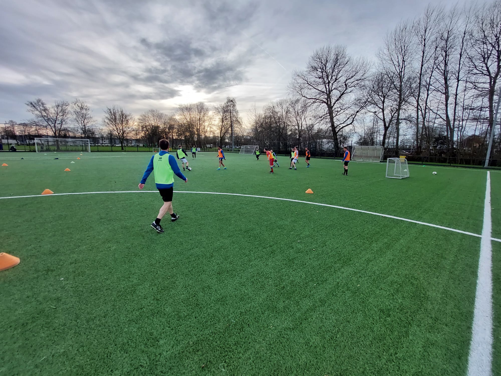
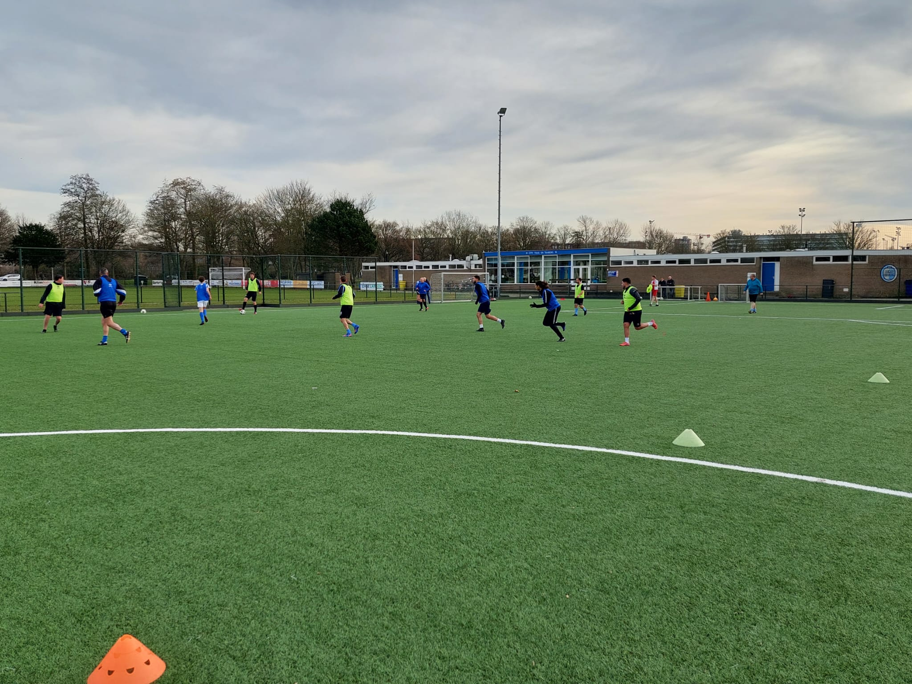
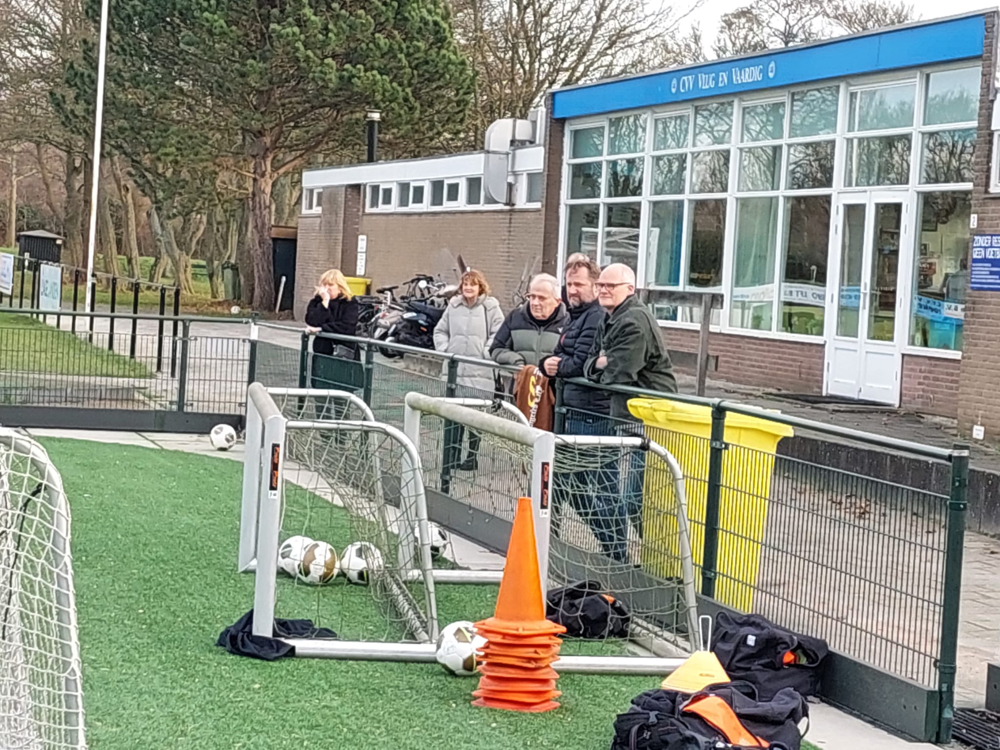

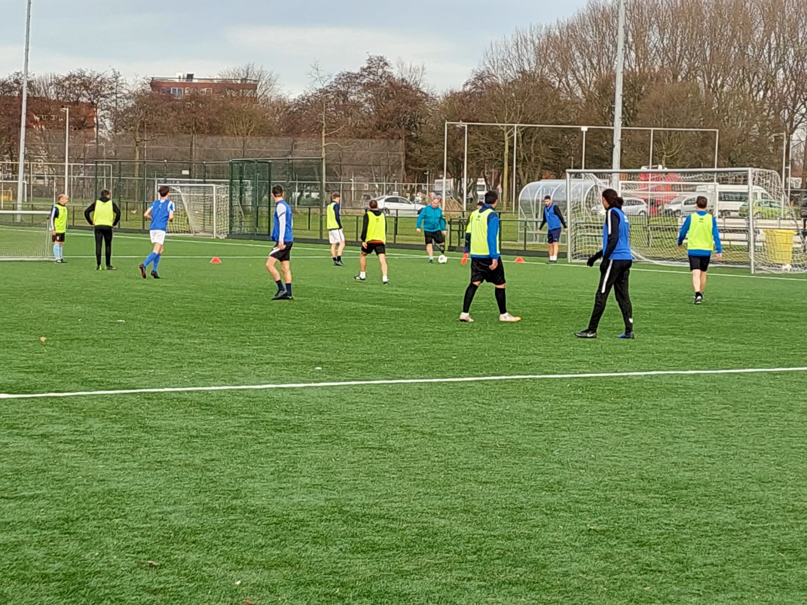
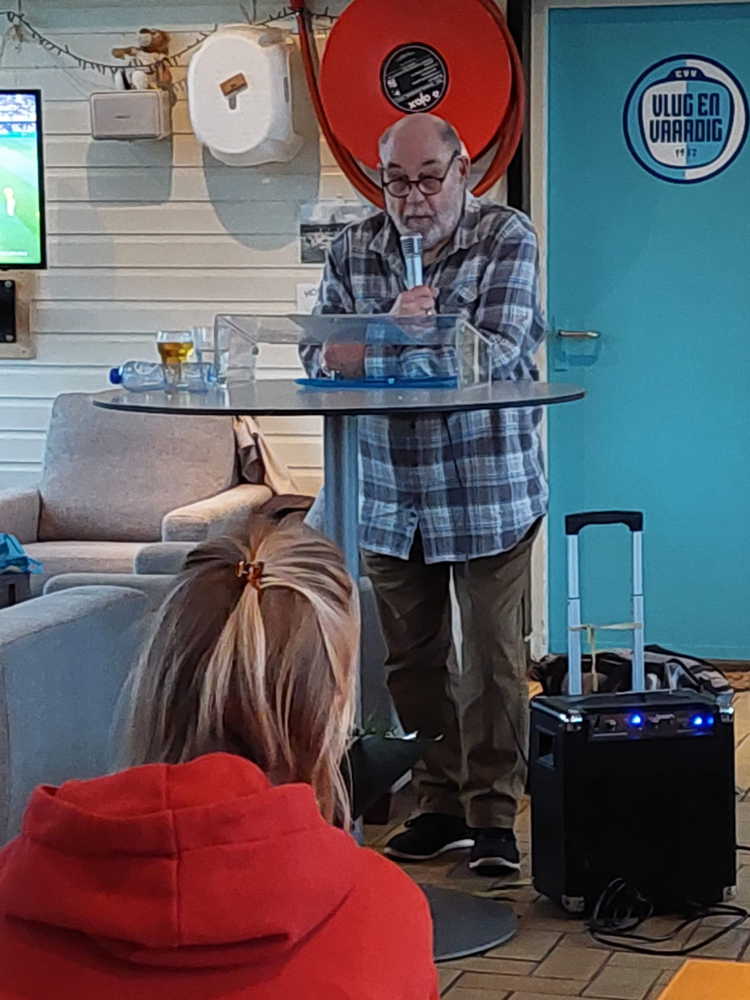
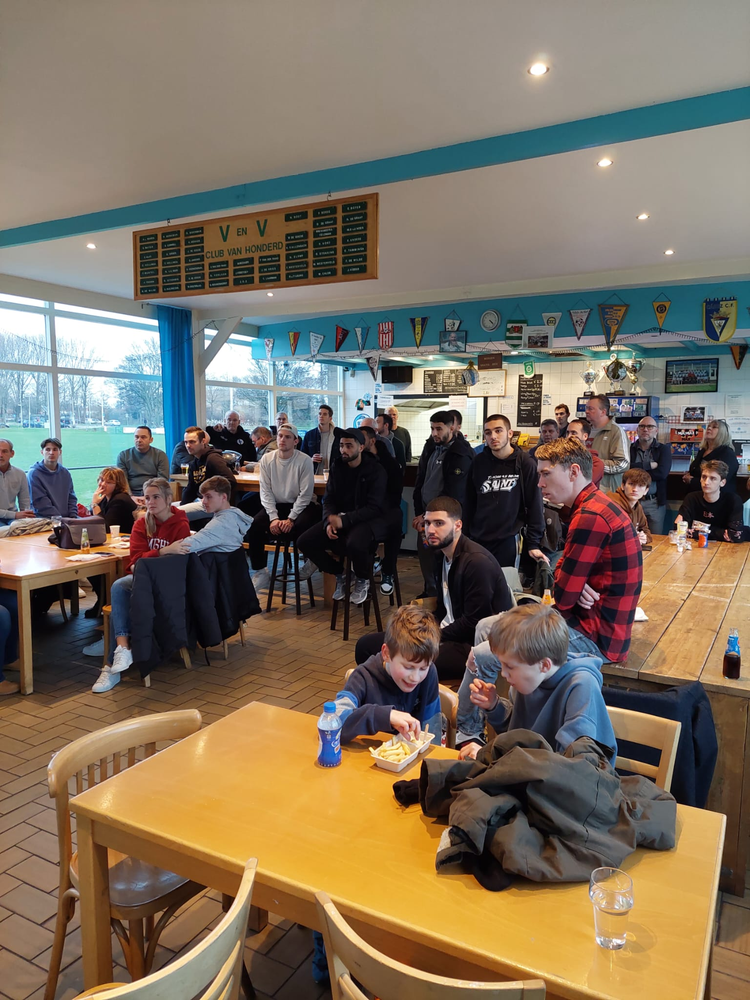
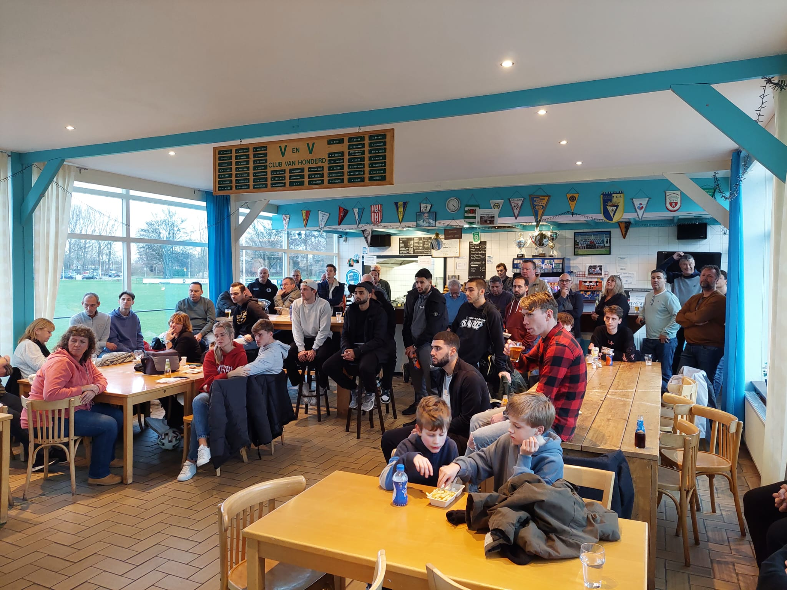
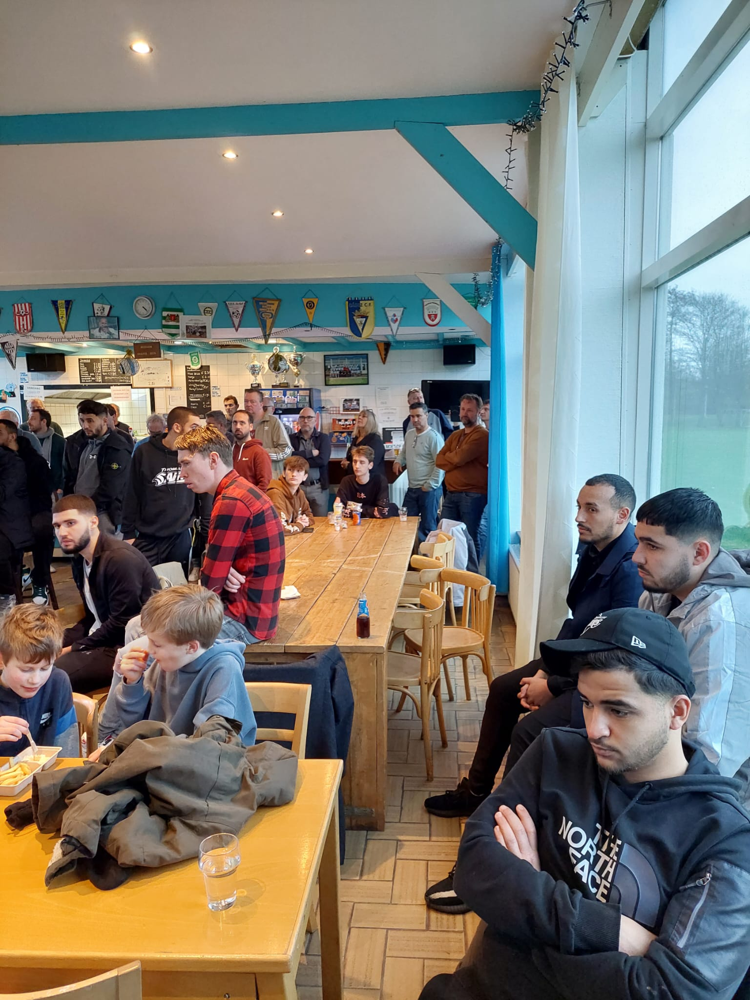
Nieuwjaarsreceptie
29 December , 2022
Hallo allen.
Het jaar 2022 zit er weer bijna op en dat staat jaar 2023 voor de deur.
Ik wil dan ook graag een datum met jullie delen voor het 1ste voetbalactiviteit voor 2023.
Dus noteer in je agenda. Zaterdag 7 januari.
13.30 uur verzamelen 14.00 uur start onderlinge wedstrijden. 16.00 uur nieuwjaarsreceptie 16.30 uur toespraak van onze voorzitter.
Rest ons jullie een goed uiteinde en een gezond en sportief 2023 te wensen.
Tot 7 januari
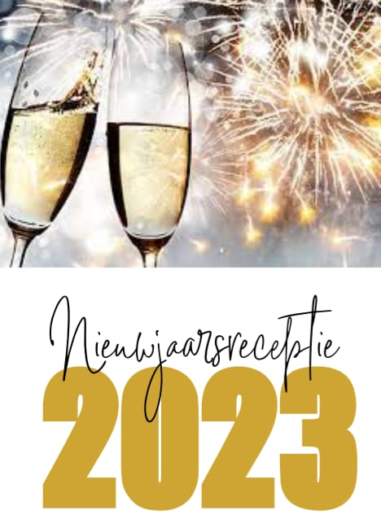
VAN DE VOORZITTER
15 December , 2022
Maandag 12 december vond, na 2 jaar, weer onze Algemene Ledenvergadering plaats. Zoals inmiddels helaas gebruikelijk was de opkomst beperkt, maar verheugend was dat een deel van de selectie na de training aansloot.
Een paar punten uit deze vergadering wil ik graag doorgegeven:
* er was een ingekomen stuk van een betrokken lid, dat voorstelde de € 190 energiecompensatie over te maken aan VenV onder het motto ‘energie voor de club’. Uiteraard moet iedereen zelf bekijken of hij deze compensatie kan missen, de club kan het in ieder geval goed gebruiken;
* de vergadering ging akkoord met het voorstel van het bestuur de contributie per 1 juli 2023 op dit moment nog niet te verhogen, omdat er nog teveel onzekere factoren zijn. Mocht het nodig zijn, dan komen wij daar in de loop van 2023 op terug;
* de renovatie is nagenoeg afgerond en wij zijn iedereen, die daaraan gewerkt heeft, veel dank verschuldigd, in het bijzonder Rob Oosterloo – hij heeft o.a. alle subsidies geregeld. Ook danken wij de firma Nieuwenhuizen voor het buiten de offerte vallende werk, dat bij de renovatie is verricht. Wij hebben de firma Nieuwenhuizen daarover een bedankbrief geschreven;
* volgens ons huishoudelijk reglement moeten wij een aantal commissies hebben. Eén daarvan is de strafcommissie, die gelukkig zelden of nooit in actie hoeft te komen. Daarin was een vacature en wij hebben Joop Teeken bereid gevonden deze te vervullen. Wij hopen natuurlijk, dat hij nooit in actie hoeft te komen;
* wij namen deze avond afscheid van Elwin Kroese, die de afgelopen jaren onze penningmeester was. Hij heeft zijn werk getrouw en nauwgezet verricht, ook toen hij stopte met voetballen. Nu heeft hij een nieuwe rol: samen met Samira het opvoeden van zoon Thomas. Elwin ontzettend bedankt en proost!
* van het 3e team kwam de mededeling, dat men vreest volgend seizoen te weinig spelers te hebben. Donkere wolken dus! Edwin heeft wat contacten, dus achter de wolken schijnt ook een beetje zon, MAAR er moet echt iets gebeuren. Wij vragen de PR-commissie met spoed de draad op te pakken en JULLIE vragen wij uit te zien naar mensen, die willen komen voetballen of studententeams te benaderen.
LATEN WIJ SAMEN ZORGEN DAT VenV HONDERD JAAR GAAT BESTAAN!
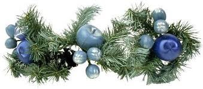
Nog een week en dan vieren wij weer het Kerstfeest. In de Christelijke traditie, de traditie waarin VenV staat, vieren wij dan de geboorte van Jezus. Volgens de Bijbel gebeurde dat in een stal in Bethlehem, omdat er voor Jozef en zijn zwangere vriendin Maria geen plaats was in de herberg.
Volgens ds. Carel ter Linden is het verhaal waarin een engel komt vertellen dat Maria een Zoon zal ontvangen van wie God zelf de Vader is, in zijn ogen een beeldend en diepzinnig verhaal. Een verhaal over iets wat niet echt is gebeurd, maar dat wel degelijk iets zéggen wil.
In de Bijbel staat ook het boek Prediker en daarin lezen wij, dat alles zijn eigen tijd heeft. Daarbij worden diverse voorbeelden genoemd: een tijd om te huilen en een tijd om te lachten, een tijd om verdriet te hebben en een tijd om te dansen, een tijd om iemand te omhelzen en een tijd om afstand te houden en een tijd voor oorlog en een tijd voor vrede.
Laten wij hopen en bidden, dat de tijd voor oorlog in het nieuwe jaar spoedig achter ons ligt, zeker voor het volk van Oekraïne, en dat er een tijd van vrede voor de wereld aanbreekt.
Het Kind, dat in Bethlehem ter wereld kwam, is volgens het verhaal een Vredesvorst. Laat de wereld dat waar maken in 2023.
Wij wensen iedereen een stille en heilige nacht, gezellige en zinvolle Kerstdagen en een vrederijk en sportief 2023 vol heil en zegen.
Het bestuur
Nieuwe bordsponsor
4 December , 2022
Weer 3 nieuwe sponsoren bij VenV.
We zijn weer 3 borden rijker langs het 1ste veld
Erik Rijkers van PROPIPE
Yvonne en Marco Bolhoeve van KOEL-MY
Jan Meester van de Reclame borden.
Voor verdere informatie verwijs ik u naar de websites.
https://propipe.nl/
https://koelmy.nl
http://www.reclame-borden.nl/
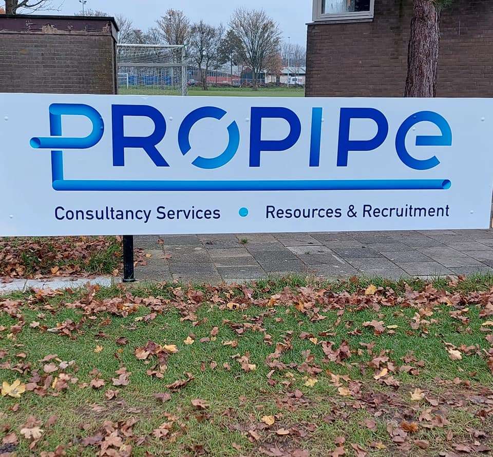
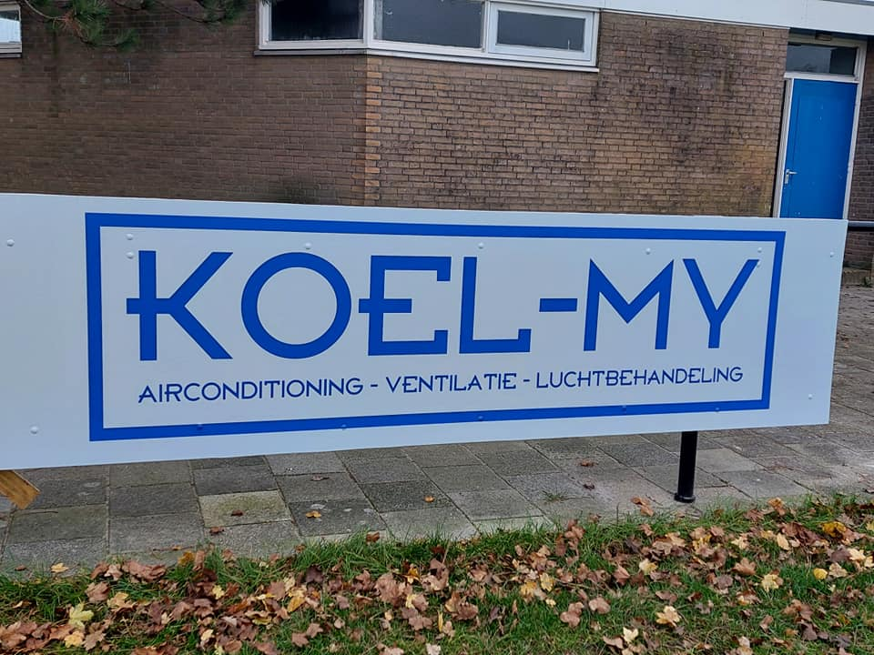
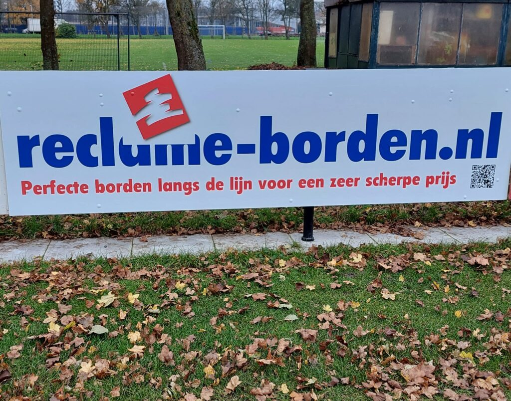
Hoe is het?
Wanneer mensen elkaar enige tijd niet gezien hebben, is de eerste zin meestal ‘hoe is het?’ Ook wij hebben elkaar een flinke tijd niet gezien en wij zijn dan ook benieuwd hoe het met jullie is. Zijn jullie de corona-periode goed doorgekomen en hebben jullie inmiddels grote honger naar de bal? Wij hopen het binnenkort te vernemen als de bal weer gaat rollen. Wij kunnen jullie vertellen hoe het met ons is en ons is in dit verband Vlug en Vaardig. Helaas heeft onze zeer gewaardeerde secretaris Wim de Wilde een hersenbloeding gehad. Na een poosje in het AMC te zijn verpleegd, is hij nu opgenomen in Reade, het revalidatiecentrum aan de Overtoom. Het gaat naar omstandigheden goed met hem, alleen zijn rechterarm en rechterbeen willen nog niet zoals het moet. Laten wij hopen, dat de revalidatie op termijn het gewenste resultaat heeft. WIM STERKTE en dat geldt natuurlijk ook voor zijn vrouw. Onze onderhoudsmensen zijn druk bezig geweest in ons clubhuis. Alles is extra schoongemaakt en opnieuw in de verf gezet. Het ziet er weer ‘gelikt’ uit. Ton Laarman en Peter van der Raad onze dank is groot, ZEER GROOT! De NS had een tijdje de slogan ‘waar zouden wij zijn zonder de trein?’ Wij weten inmiddels, dat wij soms ook met de trein nergens komen. Maar voor V en V geldt wel: waar zouden wij zijn zonder Ton en Peter? NERGENS!! Op onze website staat een tekst van Kasper Koster over onze Mister V en V, Edwin van der Raad. Zeer de moeite waard om te lezen, Kasper bedankt! Nog even en de bal gaat weer rollen. Dit betekent, dat wij ook weer gasten gaan ontvangen. Wie gasten wil ontvangen, zorgt dat het huis op orde is. Daar zijn wij de afgelopen maanden mee bezig geweest en graag informeren wij jullie over de stand van zaken. De warmwatervoorziening (boiler) en de CV-ketel aan de bezoekerskant zijn op en moeten vervangen worden. Daarvoor is een offerte aangevraagd bij onze huisloodgieter Sargentini. Ook is er een duurzaamheidsscan gemaakt. Tijdens het gesprek hierover kwamen de subsidie-mogelijkheden naar voren. Er is een rijksregeling, waarbij wij 20% subsidie kunnen krijgen op onderhoud en 30% op duurzaamheid. Voorwaarde is wel, dat er minimaal € 25.000 geïnvesteerd wordt. Met alleen de boiler en de CV-ketel halen wij dat niet. Toen kwam onze bijna 60 jaar oude dakbedekking in beeld. Het zou geen luxe zijn die te vervangen. Verder kwam naar voren, dat sportverenigingen verschillende subsidies mogen stapelen. Zo is het idee ontstaan om opnieuw een subsidieaanvraag bij de gemeente te doen, de zgn. 1/3-regeling: 1/3 deel subsidie, 1/3 deel eigen vermogen en 1/3 deel lening. Het geluk wil, dat wij door het opheffen van de stichting Caland, € 10.000 hebben ontvangen, die wij als investeringsbijdrage kunnen gebruiken. Verder is het zo, dat door de geweldige acties eerder dit jaar, de ontvangen subsidies uit de coronamaatregelen en de reguliere inkomsten wij, zoals het er nu naar uitziet, de lening niet nodig hebben, omdat wij dat 1/3 deel met eigen geld kunnen financieren. Als de subsidie van de gemeente wordt verstrekt en de werkzaamheden zijn uitgevoerd dan kunnen wij de totale investering bij de rijksregeling nog een keer indienen en krijgen dan minimaal 20% subsidie. Op deze manier is het mogelijk al lang noodzakelijk onderhoud aan onze clubhuis nu uit te voeren. Wel is het zo, dat wij bij de werkzaamheden aan het dak enig ‘eigen werk’ moeten leveren. Jullie kunnen dus een verzoek om te helpen dit ‘eigen werk’ te verrichten tegemoet zien. Denken jullie nog aan onze komende vacatures: PENNINGMEESTER en WEDSTRIJDSECRETARIS SENIOREN. Het zou toch geweldig zijn als wij het nieuwe seizoen van start kunnen gaan in een geweldig clubhuis en zonder vacatures. Zo is het dus! Het bestuur
Memoires van een willekeurige voetballer en zijn emoties in coronatijd
De coronatijd heeft voor mij toch iets duidelijk gemaakt. Doordat we al zolang niet meer samen zijn ben ik er achter gekomen dat ik mannen mis. Het is dus een mooi moment om maar uit de kast te komen. Elke zaterdag stond ik tussen al die mannen in op het voetbalveld en bleef ik mijn gevoelens maar onderdrukken. Dat kon, want een week later zag je iedereen toch weer. Maar nu besef ik me eens te meer dat dit grote taboe in de voetballerij maar doorbroken moet worden voor mijzelf. Ik mis Geurt met zijn kuikens en zijn reizen naar Almere. Ik mis de grote kracht achter ons Amsterdams politiekorps de Donk die het Parool dagelijks letter voor letter leest, zelfs de kruiswoordpuzzels. Ik mis het gebulder van Wimpie, de onverzettelijkheid van Marco en Brian achterin, het zuigen van Kees en Patrick, Kortje die weer vertwijfeld terug sjokt als hij weer diep is gegaan maar overgeslagen, Bassie die tegenwoordig alleen nog maar bij zijn schoonouders op de bank zit, die overigens van dezelfde leeftijd zijn en mijn broertje die voor de wedstrijd de tegenstander bekijkt en dan besluit of hij last van zijn rug heeft of niet. De onbegrepen loopacties van Pieter, de onbegrepen overtredingen op Pietje Poort, de doelpunten van onze topspitsen Johny de grote en Ron de breker. Ik mis de zacht uitgesproken aanwijzingen van Maxicosi, het gemopper van Edo, de conditie van Richard, het vernuft van de winterschilder en de dadendrang van Ray. Ik mis onze eigen Schot Steve, het gesteun van oudere Kees en de spekkoek van Dave. Ik mis Beertje Tamminga, de aanslag van Klaas, de anekdotes van Frank H en de filmpjes van Arnold. Ik mis de aankomst van Coentje in de 2e helft omdat hij steevast uit en thuis door elkaar haalt, de balletjes Bayazit, het gedraai van Floor, de sleep van Martin, de strak getrokken lijnen van de kraker en de terugkeer van Frans, Rutgher en Rick. Ik mis de commentaren van onze supporters Kees en Wim, de ondersteuning van Martijn en wat hebben we veel Eri met een c en een k langs de lijn, het gemompel van de Stok en Wallie Walvis. Correctie, die 2 laatste namen mis ik eigenlijk niet. Ik mis de laatste kledingtrends van Holslag die het toch net niet halen, Ach, ik kan wel doorgaan maar het lijkt me duidelijk, ik mis mannen om me heen. Helaas ben ik visueel ingesteld en zie ik ook weer alle naakte lichamen na de wedstrijd voor me, dus ik ga toch maar weer terug de kast in. De maatregelen die nu genomen zijn doen mij vermoeden dat we op 19 Januari zeker nog niet op het veld zullen staan, maar ooit zal die tijd weer komen. Tot die tijd word ik warm van onze acties met rondjes bier te bestellen voor onze club en de nagedachtenis aan dierbaren waar we afscheid van hebben moeten nemen. Deze en alle andere acties opgezet door onze alleskunner (behalve ….) Edje helpen onze club om er financieel doorheen te komen. Laten we hopen dat er snel een einde komt aan deze corona tijd en de aanvalsleider weer vaak Sorry mag zeggen na weer een briljante maar onbegrepen pass. Fijne feestdagen voor iedereen en hoop dat alle narigheid iedereen een beetje bespaard blijft. Wees lief voor elkaar en help elkaar door deze tijd heen. Alleen samen gaan we dit overwinnen en daarna weer lekker sporten. Tot die tijd dan maar even golfen. En ach, laten we er dan nog maar eentje bestellen bij https://www.rondjevoorjeclub.nl/clubs/?club=cvvvlugenvaardig om het af te leren, proost. De aanvalsleider.
“Vlug & Vaardig, in de wandeling V&V genaamd, werd op 19 juli 1932 in de Amsterdamse Zaanbuurt opgericht. Aanvankelijk als Patrimoniums Voetbal Club, waarbij banden onderhouden werden met de christelijk sociale vereniging Patrimonium. Tegenwoordig is de naam C.V.V. V&V, of voluit: christelijke voetbal vereniging Vlug & Vaardig. Dat het een christelijke vereniging is, vindt men vooral terug in het karakter van de vereniging en het feit, dat de wedstrijden uitsluitend op zaterdag gespeeld worden”, vertelt voorzitter Foeke Westerveld van V&V. Vrije Tijd Amsterdam ging op zoek naar het verhaal van deze Amsterdamse voetbalclub.
“De opdracht voor ieder lid is: HOUD DE NAAM VLUG & VAARDIG HOOG!”
“De opdracht voor ieder lid is: HOUD DE NAAM VLUG & VAARDIG HOOG!” - Vrije Tijd Amsterdam
Het aantal teams
“Het eerste elftal speelt sinds de vijftiger jaren in de KNVB. Sinds enige jaren is er geen onderscheid meer tussen KNVB en AVB en het district West 1 is dan ook groter dan Amsterdam. Verder hebben wij nog 4 seniorenteams en een veteranenteam. Helaas hebben wij op dit moment geen jongensjeugdteams, maar wel een geweldig meidenteam. De bedoeling is wel weer jeugdteams te starten, maar op dit moment zijn de mogelijkheden zeer beperkt.”Trainingen
“V&V probeert de tijd, die de (jonge) voetballers bij haar doorbrengen, zo aangenaam mogelijk te laten verlopen. Naast de wedstrijden wordt er veel aandacht besteed aan de trainingen. Een staf van deskundige trainers staat klaar om onder leiding van een gediplomeerde trainer de voetballers de fijne kneepjes van het voetbalzaak bij te brengen.”Sociale activiteiten
“Daarnaast waren er diverse sociale activiteiten. In de loop van het seizoen werden tijdens schoolvakanties vaak extra activiteiten georganiseerd. Aan het eind van het seizoen organiseerden wij eigen jeugdtoernooien en namen de teams ook aan andere toernooien deel. Per team of combinatie van teams probeerden wij het seizoen op een speciale manier af te sluiten.”Aantal leden
“Wij hebben momenteel circa 150 leden en hebben 7 teams. Maar de ambitie is door de start met jeugdteams weer te groeien. V&V staat open voor jeugd uit de buurten.”Trouwe aanhang
“V&V heeft een zeer trouwe aanhang waar wij vreselijk trots op zijn. Bij de actie ‘een bal voor jouw club’ hoopten wij op 50 ballen, het werden er ruim 100. De actie een ‘rondje voor je club’ werd een grandioos succes. Landelijk eindigden wij op de 2e plaats, opbrengst ruim € 8.000! Het laat zien hoe de club leeft in de harten van de leden.”Iedereen is welkom
“Sportief voetballen met plezier voor iedereen is onze missie. Onze visie is dat ondanks CVV Vlug & Vaardig een zaterdagclub is met een christelijke signatuur, voor iedereen openstaat. Personen vanaf 6 jaar kunnen lid worden als er plaats is in een team, dat bij hun leeftijd past. Aan het lidmaatschap is verbonden, dat er tijdig contributie betaald wordt, dat er op maandag/woensdag getraind wordt en op zaterdag wordt gevoetbald. Ook zijn aan het lidmaatschap van jeugdleden (< 19 jaar) gedragsregels verbonden, die op de website van de vereniging vermeld staan.”Voetballen met respect
“Belangrijk is dat er sportief gevoetbald wordt met respect voor tegenstander en scheidsrechter. Bedacht moet worden dat er geen wedstrijden zijn als er geen tegenstanders zijn! De opdracht voor ieder lid is: HOUD DE NAAM VLUG & VAARDIG HOOG! Het accent ligt op recreatie, al hopen wij natuurlijk wel, dat er gewonnen wordt en dat ons vlaggenschip senioren 1, zo hoog mogelijk speelt.”Sportpark Ookmeer
Wij zijn blij met onze accommodatie op sportpark Ookmeer, al baart het ons ook wel zorgen. Het clubhuis stamt uit de jaren 60 en vraagt dus het nodige onderhoud. Gelukkig hebben wij enkele jaren geleden de puien van de kantine kunnen vernieuwen en nu zijn wij bezig de raampjes van de kleedkamers onder handen te nemen. Ook de verwarming en de heet watervoorziening vragen de nodige aandacht.Vrijwilligers
“Zeer belangrijk voor onze vereniging zijn de vrijwilligers. Behalve de verplichte hoofdtrainer zijn alle medewerkers vrijwilligers. Wij stellen het dan ook zeer op prijs als ouders van jeugdleden en seniorenleden een bijdrage aan het reilen en zeilen van de vereniging leveren. Tot nu toe hebben wij het altijd gered met onze vrijwilligers, zij zijn de kurk waarop de vereniging drijft. De situatie is wel eens penibel geweest, maar altijd weer staan er ‘nieuwe’ mensen op, die de kar trekken en in beweging houden.”Bekende voetballers
“In de loop der jaren hebben wij diverse hoogtepunten gekend. Zo hebben wij enkele spelers gehad, die het tot het betaald voetbal gebracht hebben. In een grijs verleden Jan Schreuder, wat later Guido Pen, Dries Boussatta en Bryan Roy.”Onvergetelijke hoogtepunten
“De viering van ons 25-jarig bestaan in Marcanti was ook een hoogtepunt. Onvergetelijk was de promotie naar de 2e klasse ten koste van Ajax zaterdag; de wedstrijd werd gespeeld in het oude Ajax-stadion en gewonnen met 2-0. Een paar keer hebben wij aan de poort van de 1e klasse gerammeld, toen de hoogste klasse in het zaterdagvoetbal. Verder is het jaarlijkse clubtoernooi op Hemelvaartsdag, aanvankelijk Hoge Hoedtoernooi, inmiddels het Sixentoernooi, een echt V&V-familiefeest.”Sportpark Ookmeer
“Er zijn enkele clubs op sportpark Ookmeer, die bij ons zijn ingedeeld: ZSGO/WMS, DEVO’’58 en OSC.”Weinig Corona-improvisaties
“Wij hebben gehandeld naar bevind van zaken, waar niet gespeeld werd/wordt valt er weinig te improviseren.”Boegbeeld van V&V
“Het boegbeeld van onze club is zonder enige twijfel onze hoofdtrainer. Hij heeft vanaf zijn 6e jaar bij ons gevoetbald en is nu voor het 12e jaar onze hoofdtrainer. Daarnaast is hij ook onze ‘grootste’ vrijwilliger, altijd bezig met zijn V&V. Hij heeft zich sterk gemaakt voor onze jeugd en gaat dat ook weer doen als wij opnieuw jeugd mogen verwelkomen. Verder organiseert hij dartavonden, pokeravonden en een voetbalquiz. Wij zijn vast nog wel iets vergeten, want wie V&V zegt, zegt EDWIN VAN DER RAAD, een man van goud!”Slotwoorden
“V&V is op weg naar het 100-jarig bestaan in 2032. Wij doen er alles aan om dat te halen”, laat voorzitter Foeke Westerveld ten slotte namens Vlug & Vaardig weten.Club van 100/50
HARTELIJK BEDANKT! Frank de Wilde, Edwin van der Raad, Foeke Westerveld, Eric Boter, Guus Boerman, Peter Kort, Joop Teeken, Rob Oosterloo, Pieter Bosse, Ronald Stokking, Stephen Connell, Arjan Dekker, Frans Mantel,Jan de Goede, Nico Boot, Peter van der Raad, Erno Hellinga,Hans Berkman, Hero Oosterloo, Piet van Baren, Ruud Uiterwijk, Piet Veenendaal, Wim de Goede, J. de Vries, Rick Verlaan, voor jullie financiële bijdragen aan de Club van 100/50, die jullie vorig jaar omstreeks deze tijd deden. Met het bedrag van € 1250,- hebben we het afgelopen jaar het clubhuis weer verder kunnen verfraaien. Door inzet van vele vrijwilligers kun je heel wat met dat bedrag doen. Maar het is nog niet genoeg. We kunnen door de huidige 25 leden van de Club van 100/50 dit jaar weer rekenen op € 1250,- De leden die ooit een machtiging voor automatische betaling hebben afgegeven hoeven nergens meer aan te denken. De anderen moeten even in deze periode hun € 50,- overmaken op het speciale bankrekeningnummer: NL23INGB0006931129, Vlug en Vaardig Club van 100. Het zou mooi zijn als het bedrag hoger gaat worden door aanmeldingen van nieuwe leden bij de Club van 100/50. Om het jullie gemakkelijk te maken, dat jaarlijks de € 50,- automatisch wordt afgeschreven, kunnen jullie het onderstaande machtigingsstrookje invullen en ondertekend inleveren in de bestuurskamer van het clubgebouw of opsturen aan: Dhr W. de Wilde, secr. cvv. Vlug en Vaardig, Hechtelstraat 20, 1066 KL, Amsterdam. Met vriendelijke groet, Joop Teeken, Club van 100/50 ambassadeur
Machtigingsstrookje automatische incasso Club van 100 Vlug en Vaardig NAAM + voorletter(s) ADRES: POSTCODE: WOONPLAATS: GEB. DATUM: REKENINGNUMMER: INSCHRIJFDATUM: HANDTEKENING: